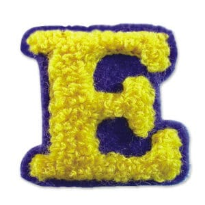
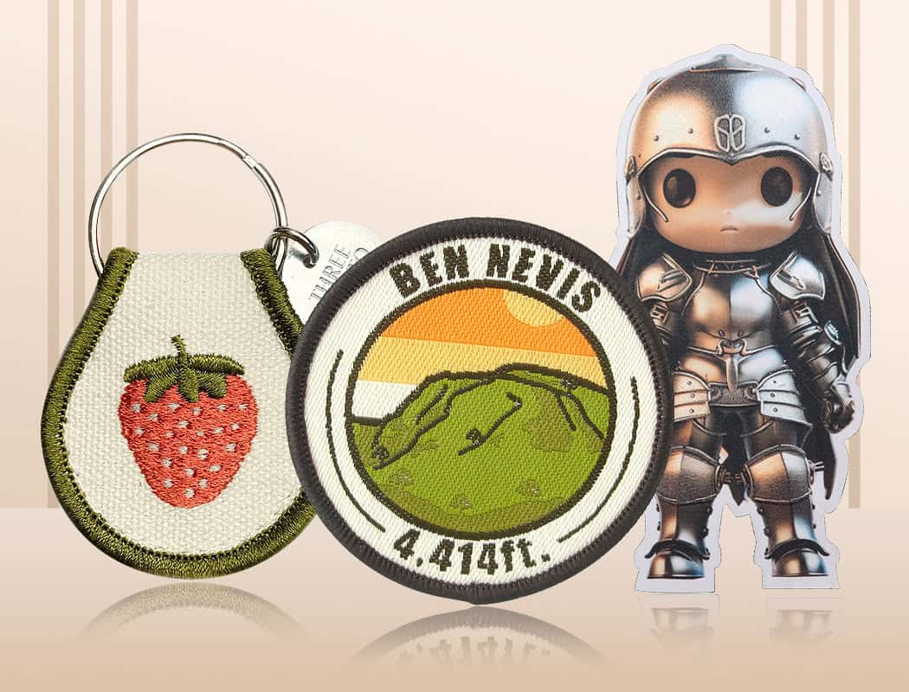

Patch & label range徽章与标签系列Gama de parchesGamme patchs et étiquettesPatch- und Etiketten-SortimentGamma toppe ed etichetteパッチ・ラベル一覧패치 & 라벨 라인업تشكيلة الرقع والملصقات

Embroidered Patches
Custom patches and labels in embroidery, woven, chenille, PVC, sequin and leather刺绣、织造、雪尼尔、PVC、亮片与皮革定制徽章和标签Parches y etiquetas personalizados en bordado, tejido, chenilla, PVC, lentejuelas y cueroPatchs et étiquettes sur mesure : broderie, tissé, chenille, PVC, paillettes et cuir.Individuelle Aufnäher und Etiketten: Stickerei, gewebt, Chenille, PVC, Pailletten und Leder.Patch ed etichette personalizzati: ricamo, tessuto, ciniglia, PVC, paillettes e pelle.刺繍、織り、シェニール、PVC、スパンコール、レザーのカスタムワッペンとラベル。자수, 직조, 셔닐, PVC, 스팽글, 가죽의 맞춤형 패치 및 라벨.شارات وملصقات مخصصة بالتطريز أو النسج أو الشينيل أو PVC أو الترتر أو الجلد.

Woven Patches
Custom patches and labels in embroidery, woven, chenille, PVC, sequin and leather刺绣、织造、雪尼尔、PVC、亮片与皮革定制徽章和标签Parches y etiquetas personalizados en bordado, tejido, chenilla, PVC, lentejuelas y cueroPatchs et étiquettes sur mesure : broderie, tissé, chenille, PVC, paillettes et cuir.Individuelle Aufnäher und Etiketten: Stickerei, gewebt, Chenille, PVC, Pailletten und Leder.Patch ed etichette personalizzati: ricamo, tessuto, ciniglia, PVC, paillettes e pelle.刺繍、織り、シェニール、PVC、スパンコール、レザーのカスタムワッペンとラベル。자수, 직조, 셔닐, PVC, 스팽글, 가죽의 맞춤형 패치 및 라벨.شارات وملصقات مخصصة بالتطريز أو النسج أو الشينيل أو PVC أو الترتر أو الجلد.

Chenille Patches
Custom patches and labels in embroidery, woven, chenille, PVC, sequin and leather刺绣、织造、雪尼尔、PVC、亮片与皮革定制徽章和标签Parches y etiquetas personalizados en bordado, tejido, chenilla, PVC, lentejuelas y cueroPatchs et étiquettes sur mesure : broderie, tissé, chenille, PVC, paillettes et cuir.Individuelle Aufnäher und Etiketten: Stickerei, gewebt, Chenille, PVC, Pailletten und Leder.Patch ed etichette personalizzati: ricamo, tessuto, ciniglia, PVC, paillettes e pelle.刺繍、織り、シェニール、PVC、スパンコール、レザーのカスタムワッペンとラベル。자수, 직조, 셔닐, PVC, 스팽글, 가죽의 맞춤형 패치 및 라벨.شارات وملصقات مخصصة بالتطريز أو النسج أو الشينيل أو PVC أو الترتر أو الجلد.

PVC & Silicone Patches
Custom patches and labels in embroidery, woven, chenille, PVC, sequin and leather刺绣、织造、雪尼尔、PVC、亮片与皮革定制徽章和标签Parches y etiquetas personalizados en bordado, tejido, chenilla, PVC, lentejuelas y cueroPatchs et étiquettes sur mesure : broderie, tissé, chenille, PVC, paillettes et cuir.Individuelle Aufnäher und Etiketten: Stickerei, gewebt, Chenille, PVC, Pailletten und Leder.Patch ed etichette personalizzati: ricamo, tessuto, ciniglia, PVC, paillettes e pelle.刺繍、織り、シェニール、PVC、スパンコール、レザーのカスタムワッペンとラベル。자수, 직조, 셔닐, PVC, 스팽글, 가죽의 맞춤형 패치 및 라벨.شارات وملصقات مخصصة بالتطريز أو النسج أو الشينيل أو PVC أو الترتر أو الجلد.
Sequin Patches
Custom patches and labels in embroidery, woven, chenille, PVC, sequin and leather刺绣、织造、雪尼尔、PVC、亮片与皮革定制徽章和标签Parches y etiquetas personalizados en bordado, tejido, chenilla, PVC, lentejuelas y cueroPatchs et étiquettes sur mesure : broderie, tissé, chenille, PVC, paillettes et cuir.Individuelle Aufnäher und Etiketten: Stickerei, gewebt, Chenille, PVC, Pailletten und Leder.Patch ed etichette personalizzati: ricamo, tessuto, ciniglia, PVC, paillettes e pelle.刺繍、織り、シェニール、PVC、スパンコール、レザーのカスタムワッペンとラベル。자수, 직조, 셔닐, PVC, 스팽글, 가죽의 맞춤형 패치 및 라벨.شارات وملصقات مخصصة بالتطريز أو النسج أو الشينيل أو PVC أو الترتر أو الجلد.
Bullion Patches
Custom patches and labels in embroidery, woven, chenille, PVC, sequin and leather刺绣、织造、雪尼尔、PVC、亮片与皮革定制徽章和标签Parches y etiquetas personalizados en bordado, tejido, chenilla, PVC, lentejuelas y cueroPatchs et étiquettes sur mesure : broderie, tissé, chenille, PVC, paillettes et cuir.Individuelle Aufnäher und Etiketten: Stickerei, gewebt, Chenille, PVC, Pailletten und Leder.Patch ed etichette personalizzati: ricamo, tessuto, ciniglia, PVC, paillettes e pelle.刺繍、織り、シェニール、PVC、スパンコール、レザーのカスタムワッペンとラベル。자수, 직조, 셔닐, PVC, 스팽글, 가죽의 맞춤형 패치 및 라벨.شارات وملصقات مخصصة بالتطريز أو النسج أو الشينيل أو PVC أو الترتر أو الجلد.
Leather Patches
Custom patches and labels in embroidery, woven, chenille, PVC, sequin and leather刺绣、织造、雪尼尔、PVC、亮片与皮革定制徽章和标签Parches y etiquetas personalizados en bordado, tejido, chenilla, PVC, lentejuelas y cueroPatchs et étiquettes sur mesure : broderie, tissé, chenille, PVC, paillettes et cuir.Individuelle Aufnäher und Etiketten: Stickerei, gewebt, Chenille, PVC, Pailletten und Leder.Patch ed etichette personalizzati: ricamo, tessuto, ciniglia, PVC, paillettes e pelle.刺繍、織り、シェニール、PVC、スパンコール、レザーのカスタムワッペンとラベル。자수, 직조, 셔닐, PVC, 스팽글, 가죽의 맞춤형 패치 및 라벨.شارات وملصقات مخصصة بالتطريز أو النسج أو الشينيل أو PVC أو الترتر أو الجلد.
Embroidery Keychains
Custom patches and labels in embroidery, woven, chenille, PVC, sequin and leather刺绣、织造、雪尼尔、PVC、亮片与皮革定制徽章和标签Parches y etiquetas personalizados en bordado, tejido, chenilla, PVC, lentejuelas y cueroPatchs et étiquettes sur mesure : broderie, tissé, chenille, PVC, paillettes et cuir.Individuelle Aufnäher und Etiketten: Stickerei, gewebt, Chenille, PVC, Pailletten und Leder.Patch ed etichette personalizzati: ricamo, tessuto, ciniglia, PVC, paillettes e pelle.刺繍、織り、シェニール、PVC、スパンコール、レザーのカスタムワッペンとラベル。자수, 직조, 셔닐, PVC, 스팽글, 가죽의 맞춤형 패치 및 라벨.شارات وملصقات مخصصة بالتطريز أو النسج أو الشينيل أو PVC أو الترتر أو الجلد.
Epaulettes
Custom patches and labels in embroidery, woven, chenille, PVC, sequin and leather刺绣、织造、雪尼尔、PVC、亮片与皮革定制徽章和标签Parches y etiquetas personalizados en bordado, tejido, chenilla, PVC, lentejuelas y cueroPatchs et étiquettes sur mesure : broderie, tissé, chenille, PVC, paillettes et cuir.Individuelle Aufnäher und Etiketten: Stickerei, gewebt, Chenille, PVC, Pailletten und Leder.Patch ed etichette personalizzati: ricamo, tessuto, ciniglia, PVC, paillettes e pelle.刺繍、織り、シェニール、PVC、スパンコール、レザーのカスタムワッペンとラベル。자수, 직조, 셔닐, PVC, 스팽글, 가죽의 맞춤형 패치 및 라벨.شارات وملصقات مخصصة بالتطريز أو النسج أو الشينيل أو PVC أو الترتر أو الجلد.
Woven Labels
Custom patches and labels in embroidery, woven, chenille, PVC, sequin and leather刺绣、织造、雪尼尔、PVC、亮片与皮革定制徽章和标签Parches y etiquetas personalizados en bordado, tejido, chenilla, PVC, lentejuelas y cueroPatchs et étiquettes sur mesure : broderie, tissé, chenille, PVC, paillettes et cuir.Individuelle Aufnäher und Etiketten: Stickerei, gewebt, Chenille, PVC, Pailletten und Leder.Patch ed etichette personalizzati: ricamo, tessuto, ciniglia, PVC, paillettes e pelle.刺繍、織り、シェニール、PVC、スパンコール、レザーのカスタムワッペンとラベル。자수, 직조, 셔닐, PVC, 스팽글, 가죽의 맞춤형 패치 및 라벨.شارات وملصقات مخصصة بالتطريز أو النسج أو الشينيل أو PVC أو الترتر أو الجلد.